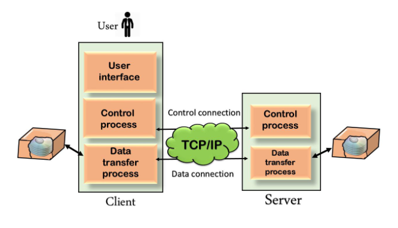

HTTP uses a server-client model. A client, for example, maybe a laptop or telephone device. The HTTP server is frequently a web host running web server software, such as Apache or IIS
The below figure shows the HTTP transaction between client and server. The client initiates a transaction by sending a request message to the server. The server replies to the request message by sending a response message.

HTTP also represents commands such as GET and POST, which are used to handle submissions on websites. The CONNECT command can act as a fast connection that is encrypted using a secure socket layer (SSL).
Although transferring files from one system to another is very simple and straightforward, but sometimes it can cause problems. For example, two systems may have different file conventions. Two systems may have different ways to represent text and data. Two systems may have different directory structures. FTP protocol overcomes these problems by establishing two connections between hosts. One connection is used for data transfer, and another connection is used for the control connection.
The below figure shows the basic model of the FTP. The FTP client has three components: the user interface, control process, and data transfer process. The server has two components: the server control process and the server data transfer process.
